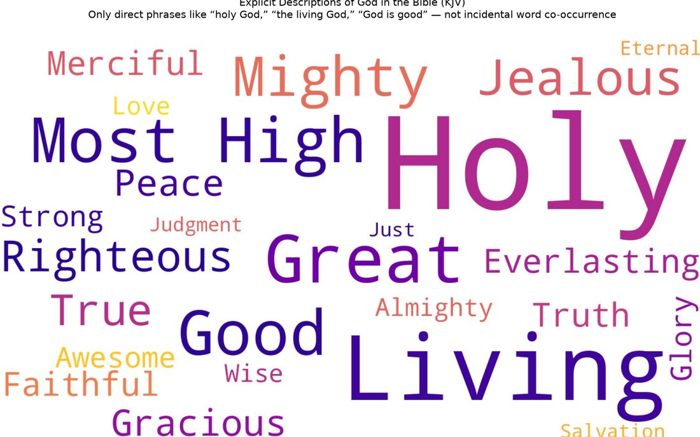

Do you love God? Why?
Because of who He is.
How do you know who He is?
Because I see His fingerprints in creation.
And you love Him because of what you see in those fingerprints?
Not entirely.
Then how else?
In the Bible I see how He interacts with His people and what He does for them.
So what He does reveals to you who He is, what He is like — and you love Him for being that?
Yes. It not only shows me what He is like but the magnitude of it, the intensity of it.
What do you mean?
For example — through the entire book of Hosea, God is showing His people how much they have continued to hurt Him by their spiritual adultery and unfaithfulness. And then He says: “Oh, how can I give you up, Israel? How can I let you go?” (Hosea 11:8–11). Isn’t that intense?
Very much so! That’s it? Anything else?
Yes, one other thing along these same lines. Jesus. This is God who has become a man to dwell among us. Now I can see what He is like in every way — there are four accounts of His entire life. He is loving everyone, healing them, forgiving them, telling them the kingdom of God is upon them. He is holding little children and letting all of them come to Him. He is rebuking religious leaders who have been false shepherds and whitewashed tombs. He weeps for people. And if all that were not enough, I see Him going to the cross to die in the most gruesome manner conceivable — to pay the price for my sin.
I understand. Would it be fair to say that everything you see in God, from natural revelation to special revelation — all His attributes — are the reasons you love Him?
Yes! That sums it up perfectly.
I have just one question, then. Do you know which attribute of God is mentioned more than any other in the Bible?
Loving? Forgiving? No — I don’t know.
It is holy. Far more than the others — the word rings through Revelation alone some twenty-five times. So my question is: if God’s holiness is the attribute mentioned most, is it one of the reasons you love Him?
I don’t know. I suppose so.
Why would you love Him for that? What if holiness were not one of His attributes — would you still love Him?
Yes. Why not? Why should it matter if He were not holy, or missing any other attribute? The rest are more than enough reasons to love Him.
Welcome to a long conversation I had in my head years ago. We were going through Revelation in BSF, and right away it was obvious how God’s holiness is front and center in heaven. It almost seemed like a game of Simon Says. Simon Peter Says? Whenever anyone would say the name of Jesus, it was a contest to see who could get on their face first and cry out, “Holy, Holy, Holy!” Beautiful. In every way. A game I will be part of someday, and am practicing even now. But that very first night I lay in my bed thinking about it more. I know God is holy — but I don’t respond like that. The more I thought about it, the more I realized I didn’t even know the breadth or depth of what holy meant. Why is it such a big deal? Isaiah almost dies from it. In Revelation everyone is tripping over it. Why not just cry, “Love, Love, Love!”? Finally I admitted it to myself: holiness was not even an endearing attribute of God to me. If anything, it was an offending attribute. While every other attribute of God is beautiful and magnificent and pulls at my heart like nothing else, His holiness does just the opposite. Much like Isaiah, I shout, “It’s all over! I am doomed, for I am a sinful man” (Isaiah 6:5). I want to say, “Wretched man that I am!” (Romans 7:24). Every attribute of God bids me come — but His holiness commands me to depart.
On and on these thoughts raced through my head every night, into the early morning. For a couple of months! Fortunately, I found some NyQuil in the medicine cabinet and that seemed to help. J/K! But one night God was gracious to me and explained it — explained it in a way that even I could understand. I want to share it with you now.
Years ago, I built my home. With my own hands. When people see it today they say — you have such a beautiful home. That makes me so happy, because I still remember how hard it was to build and how I suffered. When I was praying and asking God to help me understand His holiness better, I began thinking about my house. When people say my house is beautiful, what are they referring to? The style. The color. The windows. The staircase. The granite top. The recessed lighting. The flooring. Probably all those things and more. But you know the one thing they will never call beautiful? The foundation. For one thing, they can’t see it. For another, if they did see it, it is not beautiful. It is just a bunch of concrete footings and the surrounding stem wall. It is absolutely a critical part of the house, just as Jesus taught. Just not beautiful. Then I thought more about it. All the other features I listed above do not exist without that foundation — or if they did, they would not exist for very long. The foundation may not be beautiful, and if I’m honest it is plain ugly in comparison. But my house is beautiful because of it. In and of itself it is not endearing. Yet united with everything it holds up, it is — because even though it is not beautiful in itself, it is the source of all the other beauty. Now that is endearing. That is something my heart can be attracted to!
That is what God showed me about His holiness. It is the foundation under every attribute I already loved — the love, the mercy, the faithfulness stand because holiness holds them up, unmixed and incorruptible, forever. No wonder heaven cannot stop saying it. And no wonder, as I wrote in God Draws Near, that same holiness had to keep sinful people at a distance until the price was paid: you do not compromise the foundation, or the whole house comes down.
Note: I have been using the Creed Bible app a lot more lately, and here is a conversation I had with the little lamb about this.
Word cloud: God’s attributes

Comments